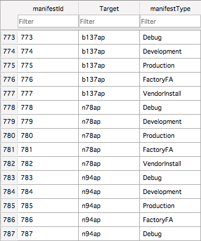

Building iBoot
What can or cannot be built
- iBoot for A5 targets (s5l8940x, s5l8942x, s5l8945x, s5l8947x) and s5l8747x (used in Haywire) can be built, but modifications are required in device_map (we'll talk about this later)
- iBoot for A6 targets (both s5l8950x and s5l8955x) can be built
- iBoot for A7 (s5l8960x), A8 (t7000, t7001), A9 (s8000, s8003, s8001), S1 (s7002) and S1P/S2 (t8002) targets can not be built due to a lot of missing headers
Building
cd iboot
Second one, however, isn't so obvious:sudo make APPLICATIONS="iBoot" TARGETS="n41 n42" BUILDS="DEVELOPMENT DEBUG" PRODUCTS="iBSS iBEC"
Let's define what it all means:- APPLICATIONS argument defines applications to be built, obviously. Valid values: iBoot, SecureROM (bootrom) and EmbeddedIOP (something loaded by kernel and situated in its cache)
- TARGETS defines device models to be built for (without "ap"/"dev" part)
- BUILDS defines BUILD_STYLEs to be built of. Valid values for iBoot application: RELEASE (just as normal iBoot supplied with IPSWs), DEVELOPMENT (untrusted image execution on Image3-compatible devices, amazing level of verbosity on newer versions and a lot of additional commands), DEBUG (same as DEVELOPMENT, but even more verbosity and even more additional commands) and SECRET (most likely just an easter egg, this build style isn't defined in device_map, so you can't build it)
Problem 1: missing SDK
%%% building on OS darwin
xcodebuild: error: SDK "iPhoneOS" cannot be located.
xcodebuild: error: SDK "ProductName" cannot be located.
xcodebuild: error: SDK "iPhoneOS" cannot be located.
xcodebuild: error: SDK "iPhoneOS" cannot be located.
Makefile:86: *** A path to a component of the SDK specifies a directory that does not exist (SDKROOT=). Stop.
Problem 2: missing executive permissions for tools
make: execvp: ./tools/generate_debug_hashes.py: Permission denied
This is because executive permissions were lost for everything in tools/ directory. Can easily be fixed:sudo chmod +x tools/*
Problem 3: missing embedded_device_map
%%%%%% library_list iBoot
makefiles/device_map.mk:15: *** Cannot locate embedded_device_map - device map queries will fail.. Stop.
make: *** [library_list-iBoot] Error 2
Problem 4: missing device_map.db
%%%%%% library_list iBoot
apps/iBoot/iBoot.mk:162: *** multiple target patterns. Stop.
make: *** [library_list-iBoot] Error 2
Problem 5: unused variable
CC build/n41-iBEC-DEBUG/lib/macho/macho.o
lib/macho/macho.c:29:17: error: unused variable 'gkalsr_debug'
Problem 6: -lcompiler_rt-static
LD build/n42-iBEC-DEVELOPMENT/iBEC.sys using -L/Applications/Xcode.app/Contents/Developer/Platforms/iPhoneOS.platform/Developer/SDKs/iPhoneOS9.3.sdk/usr/local/lib -lcompiler_rt-static ./build/lib-armv7-thumb-DEVELOPMENT/lib/libbuiltin/LIBBUILTIN.a
ld: warning: directory not found for option '-L/Applications/Xcode.app/Contents/Developer/Platforms/iPhoneOS.platform/Developer/SDKs/iPhoneOS9.3.sdk/usr/local/lib'
ld: library not found for -lcompiler_rt-static
clang: error: linker command failed with exit code 1 (use -v to see invocation)
make[2]: *** [build/n42-iBEC-DEVELOPMENT/iBEC.sys] Error 1
make[1]: *** [build-n42-iBEC-DEVELOPMENT] Error 2
STRIP build/n41-iBEC-DEBUG/iBEC.stripped
dSYM build/n41-iBEC-DEBUG/iBEC.sys.dSYM
SIZE build/n41-iBEC-DEBUG/iBEC.size
STRIP build/n42-iBEC-DEVELOPMENT/iBEC.stripped
dSYM build/n42-iBEC-DEVELOPMENT/iBEC.sys.dSYM
STRIP build/n41-iBEC-DEVELOPMENT/iBEC.stripped
SIZE build/n42-iBEC-DEVELOPMENT/iBEC.size
dSYM build/n41-iBEC-DEVELOPMENT/iBEC.sys.dSYM
SIZE build/n41-iBEC-DEVELOPMENT/iBEC.size
STRIP build/n42-iBEC-DEBUG/iBEC.stripped
dSYM build/n42-iBEC-DEBUG/iBEC.sys.dSYM
SIZE build/n42-iBEC-DEBUG/iBEC.size
__TEXT __DATA __OBJC others dec hex
380928 73728 0 0 454656 6f000
__TEXT __DATA __OBJC others dec hex
344064 73728 0 0 417792 66000
BIN build/n41-iBEC-DEBUG/iBEC.bin
BIN build/n41-iBEC-DEVELOPMENT/iBEC.bin
__TEXT __DATA __OBJC others dec hex
344064 73728 0 0 417792 66000
0+0 records in
0+0 records out
0 bytes transferred in 0.000011 secs (0 bytes/sec)
0+0 records in
0+0 records out
0 bytes transferred in 0.000010 secs (0 bytes/sec)
BIN build/n42-iBEC-DEVELOPMENT/iBEC.bin
0+0 records in
0+0 records out
0 bytes transferred in 0.000008 secs (0 bytes/sec)
__TEXT __DATA __OBJC others dec hex
380928 73728 0 0 454656 6f000
BIN build/n42-iBEC-DEBUG/iBEC.bin
0+0 records in
0+0 records out
0 bytes transferred in 0.000009 secs (0 bytes/sec)
348160+0 records in
348160+0 records out
348160 bytes transferred in 1.518022 secs (229351 bytes/sec)
348160+0 records in
348160+0 records out
348160 bytes transferred in 1.523777 secs (228485 bytes/sec)
385024+0 records in
385024+0 records out
385024 bytes transferred in 1.682545 secs (228834 bytes/sec)
385024+0 records in
385024+0 records out
385024 bytes transferred in 1.622805 secs (237258 bytes/sec)
Tweaking device_map.db to support A5 devices
embedded_device_map -db device_map.db -schema
- Targets is most important TABLE, defines properties of every supported device. There're a lot of properties, but only some of them seem to matter for building iBoot: Target, TargetType, Platform, ChipID, SecurityEpoch, CryptoHashMethod, ProductID (seems to be not important) and ImageFormat; look into makefiles/device_map.mk to check. Duplicate one of the Targets or just take one of existing and fill up these properties with data. Every of them is public knowledge
- Manifests TABLE defines manifestIds for devices from Targets of manifestTypes (valid values are Debug, Development, Production, FactoryFA and VendorInstall). Replace Target property of some unimportant device with TargetType property of target you created in Targets table for every manifestType: 
- Files table defines manifests for files with specified manifestId. No need to touch it